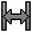
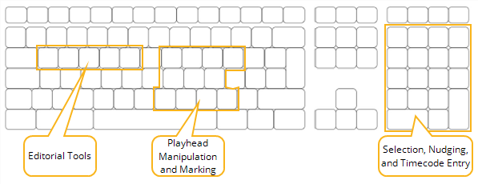

The timeline editing tools allow you to manipulate your clip instances directly in the timeline, in single- or multi-view projects, using a series of modal editorial tools that complement the Multi Tool. Select the tool you need for the job and then select a new tool and continue editing.
The timeline editing tools are grouped for convenience - each tool group contains several tools and you can cycle between them by clicking the tool or using keyboard shortcuts. The editing tools work the same way in single- and multi-view timelines.
|
Icon |
Tools |
Description |
|
|
Multi Tool |
The Multi Tool’s functionality is equivalent to most of the other tools combined, but doesn’t require modal tool selection. |
|
|
Move/Trim |
The Move/Trim tool allows you to manipulate the position of a clip instance or its output by adding or removing handles. |
|
|
Select |
The marquee Select tool allows you to make multiple selections quickly by lassoing clip instances. Hold Shift to add to the selection and Alt to subtract from the selection. |
|
|
Selection by Track |
The track selection tools allow you to quickly select multiple items depending on the initial selection. For example, the Select Track to Right tool selects all clip instances to the right of the target clip instance, within a single track. |
|
 |
Slip Clip |
The Slip Clip tool allows you to shift a clip instance’s In and Out points by the same amount and in the same direction, retaining the original duration but altering the timeline output. |
|
|
Slide Clip |
The Slide Clip tool allows you to move a clip instance in relation to the item before and/or after the target item, without changing its length or timeline output. |
|
|
Roll Edit |
The Roll Edit tool enables you to roll a single edit within the available handles, shortening one clip instance while lengthening the other, but keeping the overall duration the same. |
|
|
Ripple Edit |
The Ripple Edit tool operates similarly to the trim function of the Move/Trim tool, except that downstream clip instances are rippled to automatically close any resulting gaps in the timeline. |
|
|
Retime Clip |
The Retime Clip tool allows you to trim a clip instance’s In or Out point and automatically retime the clip to fill the new clip instance duration. |
|
|
Razor |
The Razor and Razor All tools allow you to cut clip instances in to separate parts so you can remove sections or rearrange items on the timeline. |
|
|
Join |
The Join tool can only be used on edit points between two razored clip instances, denoted by the yellow arrows at the edit. |
TIP: Enabling Preferences > Panels > Timeline > show frame end marker draws an extra line on the timeline to the right of the playhead, indicating the end of the current frame.
The modal editorial tools are mapped to the Q, W, E, R, and T keyboard shortcuts when the timeline is the active tab.
NOTE: For a full list of keyboard shortcuts, please see Appendix B: Keyboard Shortcuts.

Pressing a keyboard shortcut multiple times selects the tools within each mode. For example, pressing E twice, rapidly in succession activates Slide Clip. Pressing them slowly in succession does not achieve the same result, but instead, remains on the first item in the menu. This allows you to activate a tool without knowing the current state of tool selection.
• mapped to Q, cycles through Multi Tool, Move/Trim, and Select.
• mapped to W, cycles through Track Selection tools.
• mapped to E, cycles through Slip Clip and Slide Clip.
• mapped to R, cycles through Roll Edit, Ripple Edit, and Retime Clip.
• mapped to T, cycles through Razor, Razor All, and Join.
|
|